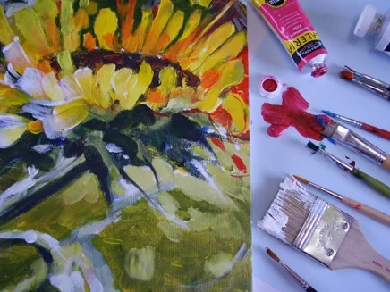
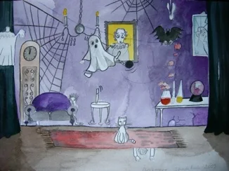
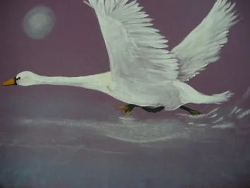
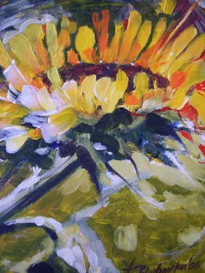

Les · in overleg
Individuele teken- en schilderlessen
Bent u door leeftijd of een handicap aan huis gebonden of vindt u het niet zo plezierig om in een groep te werken?
Er bestaat de mogelijkheid om individuele teken- en schilderlessen te volgen.
Tijdens een gesprek wordt er gekeken welke teken- en schildertechniek bij u past.
U leert alles over het mengen van kleuren, toepassen van licht en schaduw, het gebruik van lijnen, perspectief en het kiezen van het juiste onderwerp. U leert bewuster kijken naar de dingen om u heen. U werkt naar uw eigen inspiratie of naar een opdracht.
Tekenen en schilderen kunnen een geweldige bezigheid en een welkome invulling van uw vrije tijd worden! Lestijden en kosten van de lessen in overleg.

Interesse in individueel?
Neem contact op voor meer informatie of om u aan te melden.
Ook mogelijk
Andere lessen

Spelenderwijze komen de kinderen hier met kunst in aanraking.

Voor jongeren die de wereld van kleuren, vormen en verschillende technieken willen ontdekken.

In uw eigen tempo werken aan de onderwerpen en technieken die bij u passen.